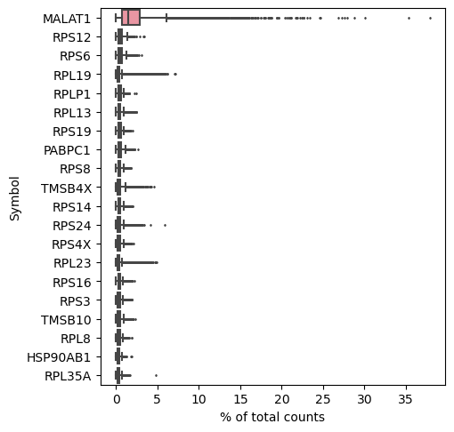
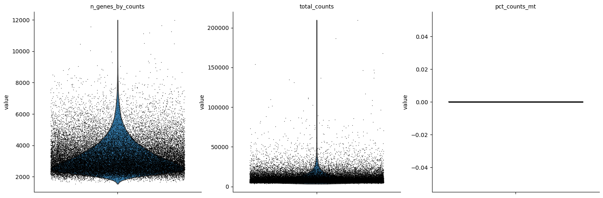
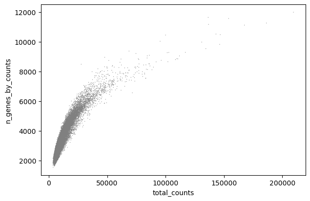
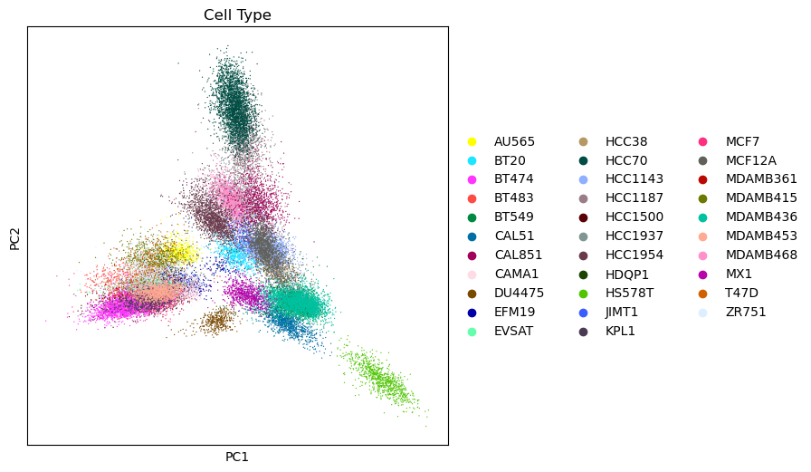
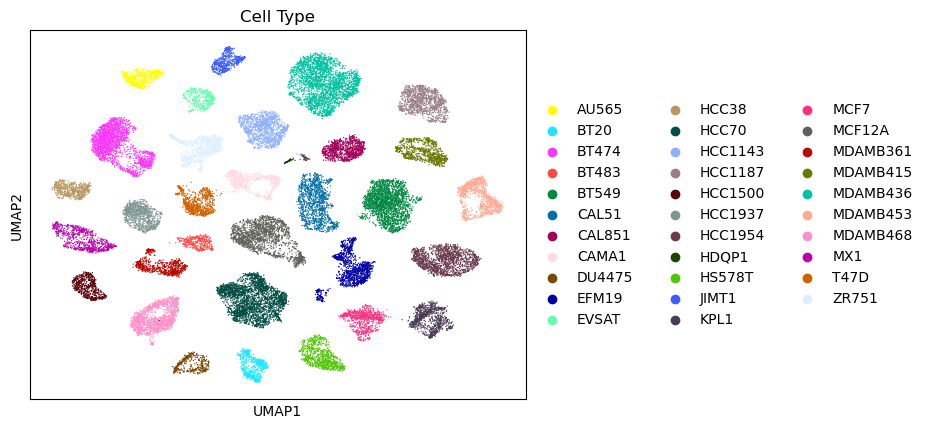
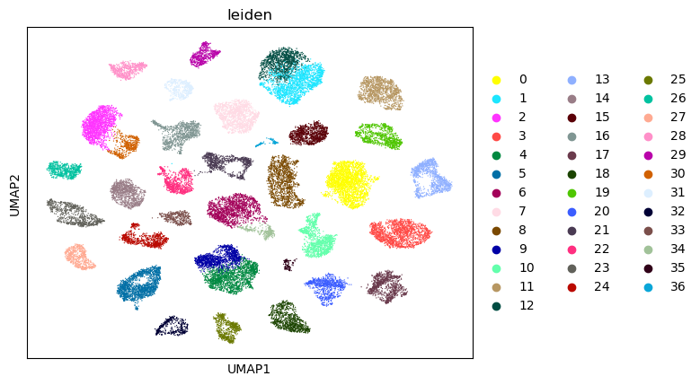
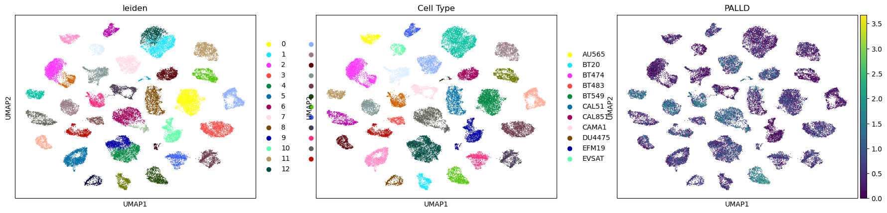
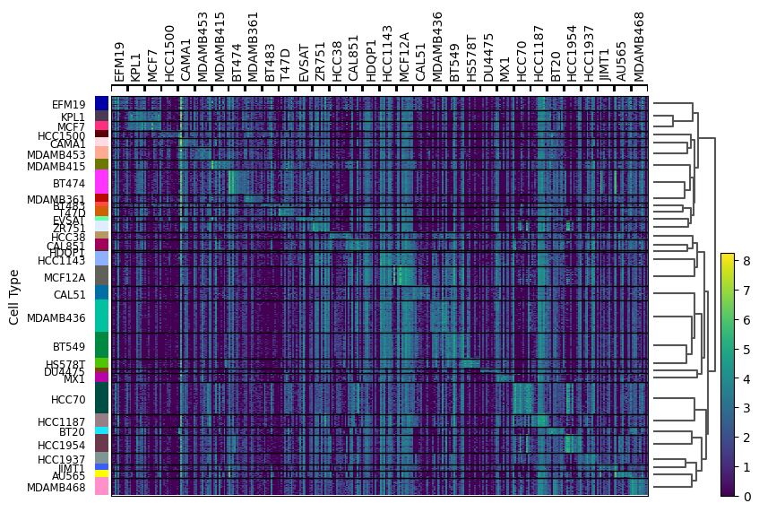
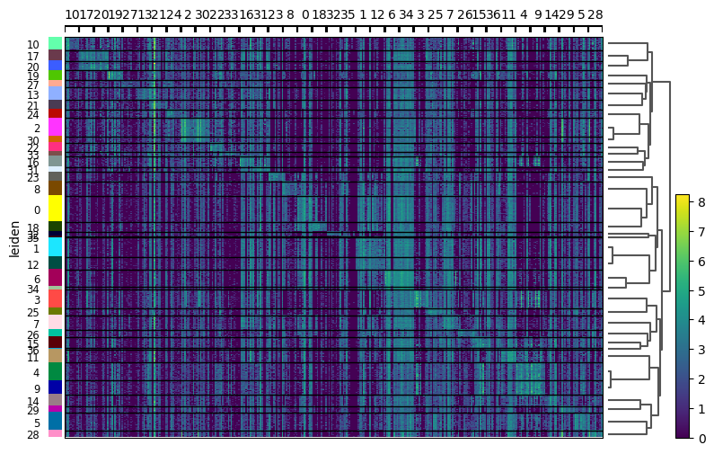
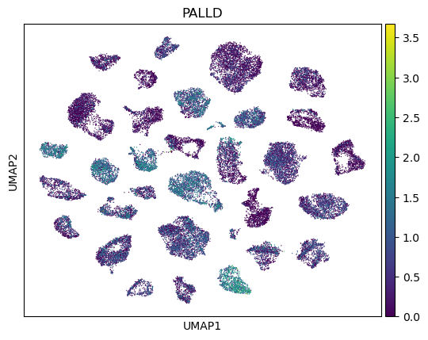

import scanpy as sc
import pandas as pd
import numpy as np
from matplotlib.pyplot import rc_context
import io
import anndata as ad
import seaborn as sns
import leidenalg
import warnings
warnings.filterwarnings('ignore')Breast Cancer Cell Lines Dataset
SCRNA-seq
scanpy
Breast cancer
Packages:
Data:
adata = sc.read_h5ad('GSE173634_Human_BreastCancer_32CellLines_Y2021_35276Cells_Figshare_Counts_Gambardella_diBernardo.h5ad')
adata.var_names_make_unique()adataAnnData object with n_obs × n_vars = 35276 × 47096
obs: 'FullCode', 'Cell Type'
var: 'Ensembl', 'Entrezgene', 'Type of gene', 'Map location', 'chr', 'start', 'end', 'strand', 'Count Pubmed', 'Count Pathways', 'Name', 'Other names'adata.obs['Cell Type'].unique()['AU565', 'HCC1937', 'HCC38', 'MDAMB468', 'EFM19', ..., 'HCC1954', 'KPL1', 'ZR751', 'MX1', 'MDAMB453']
Length: 32
Categories (32, object): ['AU565', 'BT20', 'BT474', 'BT483', ..., 'MDAMB468', 'MX1', 'T47D', 'ZR751']Exploratory Data Analysis:
Show those genes that yield the highest fraction of counts in each single cell, across all cells.
sc.pl.highest_expr_genes(adata, n_top=20,)
Basic filtering of cells and genes.
Annotate the group of mitochondrial genes as ‘mt’.
sc.pp.filter_cells(adata, min_genes=200)
sc.pp.filter_genes(adata, min_cells=3)
adata.var['mt'] = adata.var_names.str.startswith('MT-')With pp.calculate_qc_metrics, we can compute many metrics very efficiently
sc.pp.calculate_qc_metrics(adata, qc_vars=['mt'], percent_top=None, log1p=False, inplace=True)
sc.pl.violin(adata, ['n_genes_by_counts', 'total_counts', 'pct_counts_mt'],jitter=0.4, multi_panel=True, save='_QC.png',)WARNING: saving figure to file figures/violin_QC.png
A violin plot of some of the computed quality measures:
the number of genes expressed in the count matrix.
the total counts per cell.
the percentage of counts in mitochondrial genes.
sc.pl.scatter(adata, x='total_counts', y='pct_counts_mt', save='_QC_total_pct_mt.png')
sc.pl.scatter(adata, x='total_counts', y='n_genes_by_counts', save='_QC_total_n_genes.png')WARNING: saving figure to file figures/scatter_QC_total_pct_mt.png
WARNING: saving figure to file figures/scatter_QC_total_n_genes.png
no metochondrial genes in the dataset.
filtering out n_genes_by_counts < 8000.
Total-count normalized, and Logarithmize the data.
adata = adata[adata.obs.n_genes_by_counts < 8000, :]
sc.pp.normalize_total(adata, target_sum=1e4)
sc.pp.log1p(adata)
sc.pp.highly_variable_genes(adata, min_mean=0.0125, max_mean=3, min_disp=0.5)sc.pl.highly_variable_genes(adata, save='_HVG.png',)WARNING: saving figure to file figures/filter_genes_dispersion_HVG.pngIdentify highly-variable genes.
adata.raw = adata
adata = adata[:, adata.var.highly_variable]
sc.pp.regress_out(adata, ['total_counts', 'pct_counts_mt'])
sc.pp.scale(adata, max_value=10)
sc.tl.pca(adata, svd_solver='arpack')Reduce the dimensionality of the data by running principal component analysis (PCA), which reveals the main axes of variation and denoises the data.
a scatter plot in the PCA coordinates color=‘Cell Type’.
# rc_context is used for the figure size,
with rc_context({'figure.figsize': (6, 6)}):
sc.pl.pca(adata, color='Cell Type', save='_PCA.png',)WARNING: saving figure to file figures/pca_PCA.png
the contribution of single PCs to the total variance in the data.
This gives us information about how many PCs we should consider in order to compute the neighborhood relations of cells.
sc.pl.pca_variance_ratio(adata, log=True)sc.tl.tsne(adata)The file that will store the analysis results
compute clusters using the leiden method and store the results with the name clusters
sc.pp.neighbors(adata, n_neighbors=10, n_pcs=40)
sc.tl.leiden(adata)sc.tl.paga(adata)
sc.pl.paga(adata, plot=False) # remove `plot=False` if you want to see the coarse-grained graph
sc.tl.umap(adata, init_pos='paga')Umap plot
As we set the .raw attribute of adata, the previous plots showed the “raw” (normalized, logarithmized, but uncorrected) gene expression.
You can also plot the scaled and corrected gene expression by explicitly stating that you don’t want to use .raw.
umap plot by clusters leiden and cell type.
sc.pl.umap(adata, color='Cell Type', use_raw=False,save='_UMAP_cell_type.png',)WARNING: saving figure to file figures/umap_UMAP_cell_type.png
adata.obs['Cell Type'].unique()['AU565', 'HCC1937', 'HCC38', 'MDAMB468', 'EFM19', ..., 'HCC1954', 'KPL1', 'ZR751', 'MX1', 'MDAMB453']
Length: 32
Categories (32, object): ['AU565', 'BT20', 'BT474', 'BT483', ..., 'MDAMB468', 'MX1', 'T47D', 'ZR751']there is 32 cell types in the dataset, leiden clusters is 36 clusters.
found more leiden clusters than cell types.
sc.pl.umap(adata, color=['leiden'], use_raw=False,save='_UMAP_leiden.png',)WARNING: saving figure to file figures/umap_UMAP_leiden.png
sc.pl.umap(adata, color=['leiden', 'Cell Type', 'PALLD'],save='_UMAP_leiden_cell_type_PALLD.png',)WARNING: saving figure to file figures/umap_UMAP_leiden_cell_type_PALLD.png
Finding marker genes.
Let us compute a ranking for the highly differential genes in each cluster.
For this, by default, the .raw attribute of AnnData is used in case it has been initialized before.
The simplest and fastest method to do so is the t-test.
sc.tl.rank_genes_groups(adata, 'leiden', method='t-test')
# sc.pl.rank_genes_groups(adata, n_genes=25, sharey=False)The result of a Wilcoxon rank-sum (Mann-Whitney-U) test is very similar.
We recommend using the latter in publications, see e.g., Sonison & Robinson (2018).
You might also consider much more powerful differential testing packages like MAST, limma, DESeq2 and, for python, the recent diffxpy.
# sc.tl.rank_genes_groups(adata, 'leiden', method='wilcoxon')
# sc.pl.rank_genes_groups(adata, n_genes=25, sharey=False)Show the 10 top ranked genes per cluster
pd.DataFrame(adata.uns['rank_genes_groups']['names']).head(10)| 0 | 1 | 2 | 3 | 4 | 5 | 6 | 7 | 8 | 9 | ... | 27 | 28 | 29 | 30 | 31 | 32 | 33 | 34 | 35 | 36 | |
|---|---|---|---|---|---|---|---|---|---|---|---|---|---|---|---|---|---|---|---|---|---|
| 0 | VIM | MAGEA4 | RPL19 | MIEN1 | RARRES1 | SEC61G | S100A2 | RPL13 | GSTP1 | RARRES1 | ... | ANKRD30A | RPL19 | ENSG00000218227 | PSMB3 | NUCB2 | SERPINI1 | RAB11FIP1 | RPS20 | LDHB | RPS28 |
| 1 | CAV1 | SNHG5 | PSMB3 | S100A9 | PDZK1IP1 | CCT6A | RPS20 | RPL14 | LDHB | PDZK1IP1 | ... | RAB11FIP1 | ENSG00000218227 | RPL19 | RPL19 | SYCP2 | VDAC1 | MTCO1P40 | RPS6 | GSTP1 | RPL37 |
| 2 | LDHB | NDUFS5 | RPL23 | S100A8 | SLPI | CHCHD2 | RPS6 | VIM | MDK | SLPI | ... | PLPBP | KRT81 | PSMD3 | MIEN1 | ATP5F1E | FGL2 | CRABP2 | RPL7 | EPCAM | RPS10 |
| 3 | LGALS1 | RPL32 | MIEN1 | NDUFS6 | S100A9 | EIF3M | TMSB10 | RPS16 | RPL22L1 | S100A9 | ... | SLC9A3R1 | NDUFB9 | LDHA | RPL23 | AKAP9 | SKP1 | TOB1 | RPL26 | TPT1 | UBL5 |
| 4 | RPS6 | LDHB | DYNLRB1 | S100A7 | CRABP2 | SAT1 | MIR205HG | RPL13A | ITM2B | CRABP2 | ... | SYCP2 | RPL7 | HSP90AB3P | DYNLRB1 | PABPC1 | GOLIM4 | KRT19 | RPS28 | RPL22L1 | SSR3 |
| 5 | PFN1 | FTL | YWHAB | STARD3 | TAGLN2 | MYL12B | CSTA | SNHG5 | ITM2C | S100A8 | ... | SLC39A6 | MAL2 | COTL1 | YWHAB | PEBP1 | TCF7 | GATA3 | RPS14 | SLC12A2 | PAGE2 |
| 6 | HACD1 | AKR1B1 | PSMD3 | KRT15 | IFI27 | KRT19 | RPL7 | RPL27A | HMGA2 | B2M | ... | ANKRD30B | S100P | PSMA7 | PSMD3 | ALOX15B | RPS15P4 | CRIP2 | RPL21 | TMEM132D-AS1 | RPL41 |
| 7 | CTSB | UCHL1 | CISD3 | MRPL36 | B2M | UBL5 | RPS28 | PTTG1IP | PLS3 | IFI27 | ... | ZNF703 | MRPL13 | CDK12 | CISD3 | MUCL1 | MGST2 | CLU | RPS18 | GTSF1 | S100A6 |
| 8 | TMSB10 | VIM | KRT19 | ATP5F1E | S100A8 | LANCL2 | RPL27 | S100A2 | TPM1 | TAGLN2 | ... | ERLIN2 | EIF1 | OXTR | CALM1 | GNAS | RPS26 | ERLIN2 | RPL27 | GPX2 | GSTP1 |
| 9 | ENO1 | RACK1 | PFDN4 | RACK1 | CDKN2A | RPL10 | RPL26 | KLF6 | PEG10 | IGFBP3 | ... | PIK3R1 | KRT19 | YWHAB | MRPL45 | HSPB1 | RPS27 | PBX1 | RPL10A | GAGE1 | EEF1A1 |
10 rows × 37 columns
Get a table with the scores and groups.
result = adata.uns['rank_genes_groups']
groups = result['names'].dtype.names
pd.DataFrame(
{group + '_' + key[:1]: result[key][group]
for group in groups for key in ['names', 'pvals']}).head(5)| 0_n | 0_p | 1_n | 1_p | 2_n | 2_p | 3_n | 3_p | 4_n | 4_p | ... | 32_n | 32_p | 33_n | 33_p | 34_n | 34_p | 35_n | 35_p | 36_n | 36_p | |
|---|---|---|---|---|---|---|---|---|---|---|---|---|---|---|---|---|---|---|---|---|---|
| 0 | VIM | 0.0 | MAGEA4 | 0.0 | RPL19 | 0.0 | MIEN1 | 0.0 | RARRES1 | 0.0 | ... | SERPINI1 | 0.000000e+00 | RAB11FIP1 | 1.929064e-285 | RPS20 | 1.099089e-263 | LDHB | 8.923028e-91 | RPS28 | 2.214358e-88 |
| 1 | CAV1 | 0.0 | SNHG5 | 0.0 | PSMB3 | 0.0 | S100A9 | 0.0 | PDZK1IP1 | 0.0 | ... | VDAC1 | 0.000000e+00 | MTCO1P40 | 2.360296e-266 | RPS6 | 6.059649e-228 | GSTP1 | 1.702707e-76 | RPL37 | 2.238960e-84 |
| 2 | LDHB | 0.0 | NDUFS5 | 0.0 | RPL23 | 0.0 | S100A8 | 0.0 | SLPI | 0.0 | ... | FGL2 | 8.300303e-321 | CRABP2 | 1.553926e-286 | RPL7 | 2.985755e-228 | EPCAM | 4.671848e-74 | RPS10 | 6.693325e-72 |
| 3 | LGALS1 | 0.0 | RPL32 | 0.0 | MIEN1 | 0.0 | NDUFS6 | 0.0 | S100A9 | 0.0 | ... | SKP1 | 0.000000e+00 | TOB1 | 3.832407e-222 | RPL26 | 8.334210e-234 | TPT1 | 8.243748e-70 | UBL5 | 3.045124e-70 |
| 4 | RPS6 | 0.0 | LDHB | 0.0 | DYNLRB1 | 0.0 | S100A7 | 0.0 | CRABP2 | 0.0 | ... | GOLIM4 | 3.952525e-323 | KRT19 | 1.607189e-229 | RPS28 | 6.225240e-219 | RPL22L1 | 1.388007e-67 | SSR3 | 2.703118e-66 |
5 rows × 74 columns
Violine plot of marker genes
If we want a more detailed view for a certain group, use sc.pl.rank_genes_groups_violin.
sc.pl.rank_genes_groups_violin(adata, groups='0', n_genes=8)Dotplot of marker genes
plot specific gene in dotplot by cell type.
sc.pl.dotplot(adata, ['PALLD','VIM', 'CAV1', 'LDHB', 'RPS6', 'HACD1', 'CTSB',], groupby='Cell Type',save='_dotplot.png',)WARNING: saving figure to file figures/dotplot__dotplot.pngheatmap of clusters cell type and leiden
sc.tl.rank_genes_groups(adata, "Cell Type", method="t-test")
sc.pl.rank_genes_groups_heatmap(adata, n_genes=10, groupby="Cell Type",save='_heatmap_cell_type.png',)
sc.tl.rank_genes_groups(adata, "leiden", method="t-test")
sc.pl.rank_genes_groups_heatmap(adata, n_genes=10, groupby="leiden",save='_heatmap_leiden.png',)WARNING: Gene labels are not shown when more than 50 genes are visualized. To show gene labels set `show_gene_labels=True`
WARNING: saving figure to file figures/heatmap_heatmap_cell_type.png
WARNING: Gene labels are not shown when more than 50 genes are visualized. To show gene labels set `show_gene_labels=True`
WARNING: saving figure to file figures/heatmap_heatmap_leiden.png

Save data file
# results_file = 'GSE173634_Human_BreastCancer_32CellLines_Y2021_35276Cells_Figshare_Counts_Gambardella_diBernardo_RES.h5ad'
# adata.write(results_file)conclusion:
The dataset contains 32 cell types, and leiden clusters is 36 clusters.
found more leiden clusters than cell types.
The dataset contains 2700 cells and 33694 genes.
during the analysis, we found that the dataset contains no metochondrial genes.
umap plot by clusters cell type gave us a good separation between the clusters.
PALLD is a gene found to be envolved in the cell migration process and breast cancer metastasis.
in this dataset PALLD has diffrent levels of expression in all the cell types.
sc.pl.umap(adata, color=[ 'PALLD'],save='_UMAP_PALLD.png')WARNING: saving figure to file figures/umap_UMAP_PALLD.png